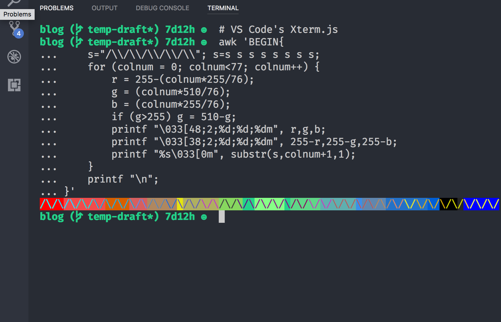

Last week, a new version (1.17) of Visual Studio Code was released. While there are many fascinating improvements and features introduced, the one that cought my eyes is “Integrated Terminal performance” section. Let’s check out what they’ve done!
(written on 2017-10-19, based on Xterm.js v3, VS Code 1.17)
Old Performance Issue
The integrated terminal in VS Code is powered by another popular open-source project “Xterm.js”, which is currently maintained by SourceLair and community contributors. There are many real-world use cases of Xterm.js, such as RStudio and JupyterLab (Ah ha! Data scientist!), not to mention SourceLair itself. One can say that Xterm.js dominates web-based terminal world as React does within front-end frameworks.
As same as other web-based HTML terminal emulators, old versions of Xterm.js are powered by old fashion. Rendering from HTMLElements, selecting text via document.getSelection, receiving DOM MouseEvents. All these works were done by a sequence of DOM manipulations.
Development in modern web technologies lowers the barriers for other devs to contribute to. Every programmer can easily pick up a JavaScript cookbook to study, then boasts about new frameworks on Github trending as he is a JavaScript expert. However, web techs also brings another significant drawback: performance.
As we mention to web performance, two key concepts should be kept in mind: reflow and repaint.

Image from MDN. We focus on layout and paint.
Reflow
When a web page is initialized, the render engine calculates dimensions and position of all elements to layout them in proper place. This is known as layout. Although layout is a normal stage of browser rendering process, any updates of position, dimensions or other properties on a specific element after initialization will lead to an additional layout on that element, and all its child nodes need to do a extra layout, too (except nodes with absolute position). These synchronously layout calculations are called reflows, which might result in performance bottlenecks.
Here is a list of what forces layout / reflow. Read it to avoid reflows.
Repaint
A repaint occurs when changes are made to an element’s visibility, background color, or other styles not relevant to layout. Repaints are less expensive than reflows, but also have some impact on browser reponsive time.
DOM manipulations are slow
Poor performance is not web techs or JavaScript’s faults. It always counts on implementaion details. Hyper and Upterm are two delightful terminal emulators based on Electron. They add many convenient features to improve our boring daily terminal lives. The pain points are their performance issues due to DOM rendering. Both rendering implementations depend on DOM manipulations.
Imagine you are running a yes-like command that writes output at full 10.2GiB/s speed. You will find that your web-based terminal emulator stuck and cannot response to any mouse event anymore. The high speed yes triggers trigger a tremendous amount of synchronous reflows and repaints. Soon, the browser becomes irresponsive.
Optimization in Dark DOM Era
Back to the original version before refactoring to canvas renderer (which started at c6d4c73c). VS Code used naïve way to render terminal output. We can simplify the old rendering process into following steps:
- Setup initial row elements corresponding to each row in terminal. That is to say, if size of the terminal is 80 * 24. It would creates 24
<div>representing each row. - Loops lines from current terminal buffer. Each line is an array of character data. A character data stores its own width and characters information.
- Loop character data in each line. Wrap each characters as
innerHTMLin a<span>element. Remember that we need to escape special character such like<,>and&. - Append
<span>s to each row element. Then append each row element to terminal element. - If anything changes, repeat previous steps.
What a nightmare!
If you are an experienced web developer, you may feel uncomfortable with all those implementation. Modifying DOM between each updates is highly expensive and leads to janky behavior. Luckily, talented maintainers of Xterm.js found their own solution to improve performance. They
- Use
DocumentFragmentto batch DOM manipulations to reduce DOM reflow/layout. - Build an object pool to reuse
<span>elements containing characters to render. This reduce a plenty of new element creation time. - Setup a skip-frame mechanism to throttle refresh rate when consuming large streamed buffer.
- Implement a custom selection logic to support multiple pages selections instead of
document.getSelection.
Despite that these methods made performance much better (at least better than other popular project I’ve tried), the implementation still had some space for enhancements. For instance,
- Modification of
<span>s in<div>rows still trigger some unnecessary reflows. - The old rendering process will always remove entire line from DOM, and then append new element to DOM, even when only a single character changed.
- Though the skip-frame mechanism can free CPU from endless
requestAnimationFrameevents, the skip-frame itself means dropping frame from 60 FPS animaition. - Most characters used in terminal can represent in ASCII code, but a browser always use UTF-16
DOMStringto store the information, which may be seen as a waste of memory usage.
Simple Intro of Canvas
As the recent blog post said, the new canvas-based rendering engine renders 5 to 45 times faster, and reduces input latency, power usage and many more. Sounds perfect! However, not all front-end developers are familiar with canvas API. Here are some basic concepts of canvas API you need to know.
The <canvas> is an HTML element providing API for rendering graphics via scripting (JavaScript) on the fly. Modern browsers would also enable hardware-acceleration of canvas rendering by default. You can think of canvas API as an optimized version of browser’s repaint powered by GPU.
API Provider
To render a 2D canvas, one developer just need to follow simple steps shown below:
- Create a rendering context (by creating a
<canvas>element). - Access contexts (use
canvas.getContext('2d')for 2D rendering context). - Start drawing via various commands.
- All drawing results are rendered onto canvas element as an composited image.
As you can see, learning 2D canvas rendering needs only a small amount (around 70 API for 2D context) of human memory. Most of these drawing API are style-related. As a web developer, you must have seen more CSS styles than these tiny group of drawing commands. Memorizing 70 additional methods is just a piece of cake, huh?
Resource Saver
Another selling points is that 2D Canvas rendering provides a plenty of pixel-awared drawing commands. Instead of updating the whole canvas element, these drawing methods let you decide your region of interset to be re-render in per-pixel level. Almost all drawing API provide optional coordinates and size parameters for devs to tweak what they really desire. The process of updating only changed elements is called invalidation, and that preserves much precious CPU and GPU time.
As opposed to DOM elements, styles in 2D canvas are shared between each path belongs to the canvas. No need to store inline-styling information for every elements. If you want to temporarily store your style state, you can use the standard context.save() and context.restore() methods to push/pop your styles from a stack-like context state container. That’s why I call canvas a memory saver!
Performance Booster
As well as saving resources, canvas rendering also gives us ways to jack up performance. One is using detached canvas as an off-screen canvas or using OffScreenCanvas directly. The latter can even draw canvas in worker threads!
Another way is creating a texture atlas. A texture atlas a.k.a. sprite sheet, is an image packed other small pieces of sub-images into itself. When drawing a sub-image, one can picks up the sub-image by its own texture coordinates. The reason to store images in single texture is that GPU is often more performant when accessing a large texture one time than multiple tiny images many times.
Nyancat runs on VS Code without janky!
Canvas to the Rescue
After understand big concepts in 2D canvas. Let’s dive into the pull request that made canvas renderder. First, recap what they’ve done:
- Texture atlas (use
ImageBitmap) for ASCII codes and ANSI 256 colors. Unicode characters and true-colored text would be drawn on the fly. - Only render changes. To determine state changes, use custom
GridCacheto stoer previous state for comparisons with incoming changes. - Use four different render layers to separate concerns and reduce the whole canvas re-rendering.
- Remove skip-frame mechanism because new rendering performance is extremely fast.
Texture Atlas and Color Managements
First, we look into the texture atlas.
Xterm.js constructs a global atlas generator shared between terminals with the same configuration (defined in ICharAtlasConfig and ICharAtlasCacheEntry). This can reduces some duplicated construction if an app gets a multiple terminal instances such as VS Code. The actual time that a atlas generated is terminal being opened by calling acquireCharAtlas. Interally, acquireCharAtlas would compare between configurations (font size, char width, color, etc.) to avoid overhead works.
The private class CharAtlasGenerator does the real stuff. It sets attribute alpha to false to reduce redundant transparent compositions. Though this config seen like a limit of flexibility, the texture atlas is enough to provides frequently used colors for most text-based programs in the world. Moreover, the generator draws all ASCII code with 8 ANSI color (3 bit) in normal and bold styles onto an detached canvas in advance. That would be nearly 256 * 16 = 4096 characters pre-rendered (though some char is invisible and not printable).

That’s how the
CharAtlaslooks behind the scene.
All colors you need on your 5-year-old ASUS laptop is here. Whoever needs more characters atlas?
In the beginning, I found that the CharAtlas generating actually twice (canvas element and ImageBitmap). Tyriar told me the intent, what they want to achieve is not only improving the construction performance, but decreasing drawing latency.
Separating Render Layers
Xterm.js separates the canvas rendering into four different layers (ordered from bottom to top):
TextRenderLayer: Render background and foreground of the content.SelectionRenderLayer: Render only selected region.LinkRenderLayer: Render hyperlink with extra color and text decorator (underline).CursorRenderLayer: Render different style of a blinking cursor.
This can gain a performance boost since the render engine only repaint changed parts instead of the whole canvas. While constructing 4 different canvases is awesome, we lost the chance to set canvas’ alpha channel to opaque. This may lead to a performance drop on 2D graphic composition. The compositor requires extra GPU time to composite 4 additional transparent contexts. GUI framework providers always recommend that use opaque layer as possible as we can (at least iOS UIKit and Canvas 2D Context said).
In reality, it may not cause any problem if you layer is not opaque. I have not yet done any profiling or tests. Just have a thought on this kind of situation.
On the other side, it is very pleasant to trace a well-organized source code. We do not need to plunge ourselves into each lines if we only want to understand a little part of code. And Xterm.js does this job perfectly. The separation of render layers is an awesome example. The feeling deepens even more when the codebase is written in TypeScript. As a former iOS engineer, the syntax of type annotations are very familiar and helpful to rapidly grasp the big picture of a project for a newcomer. Maybe it’s time to use TypeScript in our next project. Thanks Xterm.js contributors!
Bugs After Breaking Changes
Canvas renderer is awesome! Canvas renderer is promising! Canvas renderer outperforms all competitors in web-based terminal world!
Is the new renderer really that invulnerable? Maybe not.
Let me introduce some interesting issues after the switch of render engine.
Rendering Unicode Characters Wrong
When it comes to strings and texts. This may be a big nightmare to all developers. One feature Xterms.js always promoting is handling CJK fonts well. Actually, before introduing canvas renderer, most of this works done by browsers’ DOM render engine internally to handle various widths of Unicode characters. When the team chose to render character on our own renderer, the burden fell on Xterm.js itself. To render texts properly, Xterm.js needs to manually track width of all characters. Explicitly set width of render region is a must. 2D Canvas API is always that imperative and there is no way to stay away from it.
Surprisely, Xterm.js has alreadly done it before canvas render landed! It used a custom data structure to track width of a character for some resizing calculations. The only task after renderer changed is passing the character width into canvas.fillText.
Actually, character width received from terminal input are not always correct. Some characters consume more space than expected.The truth is Xterm.js extracted some concepts from this wcwidth.c implementation. Although the implementation covered almost all CJK and other Unicode chacters with various width, it have not been modified time since 2007. During these 10 years, Emoji become prosperous. Suddenly, oudated wcwidth implementation cannot support arriving crazy overflowing characters.
But Xterm.js team did not feel contented with the situation, and later they resolved the issue blazing fast. If you want to know about what they did, there was nothing but delegating up the responsibility of width calculation to web browsers’ render engine. When calling ctx.measureText, the render engine measures the target text in specific canvas context, then returns a TextMatrix that stores information abount how the text would be rendered, such as width, actualBoundingBoxLeft, and alphabeticBaseline. This implmenetation need not to aquire any Unicode code point mapping beforehand. Just believe that all browsers do it right.
Lack of True Color Support
As hardware advanced, true color terminal programs are more common nowadays. The lack of real true color support become a major problems of Xterm.js. I haven’t trace to intent why the original Xterm.js supported only ANSI 256 color, but it makes sense that canvas renderder does not support true color.
There is a class ColorManager which constructs ANSI 256 color to hex color mapping table beforehand in Xterm.js v3. This eliminates dupe computations of each hex color. However, If we want to store all the true color palette, that would be combinations of 3 color channels (RGB) mutiplying alpha channel, which approximately equal to 16 million of combinations! It’s impossible to store that huge CharAtlas in memory simultaneously.
Thus, they use a hacky way (in Terminal.ts) to make colors look like true color. The goal of this algorithm is to find the nearest color in ANSI 256 color palette. While we try some real tests on it, wes still can tell the differences without doubt. Some matching results are even so worse that they almost look like inverted colors. Many open-source projects depended on Xterm.js are eager for true color supports, including famous terminal app Hyper. However, it seems that supports for true color is not the primary goal and has been remove from v3 milestons, but the related discussion on Github is still valuable to take a look.

The REAL true color in Alacritty.

The quasi-true color in VS Code 1.17.
Summary
It is very lucky see that a widely used library is brave enough to make breaking changes. When I followed up the PR to read source code of Xterm.js, I almost believed that I were working with those brilliant contributors. The experience of tracing a well documented refactor process is awesome. You can learn from some surprsing solutions you have never thought before. You can also learn many communicating skills in open source world. Although canvas API is not the latest web standard and Xterm.js is not a well-known project compared with React and Vue, the success of Xterm.js’s renderer refactor is worthy for learning!